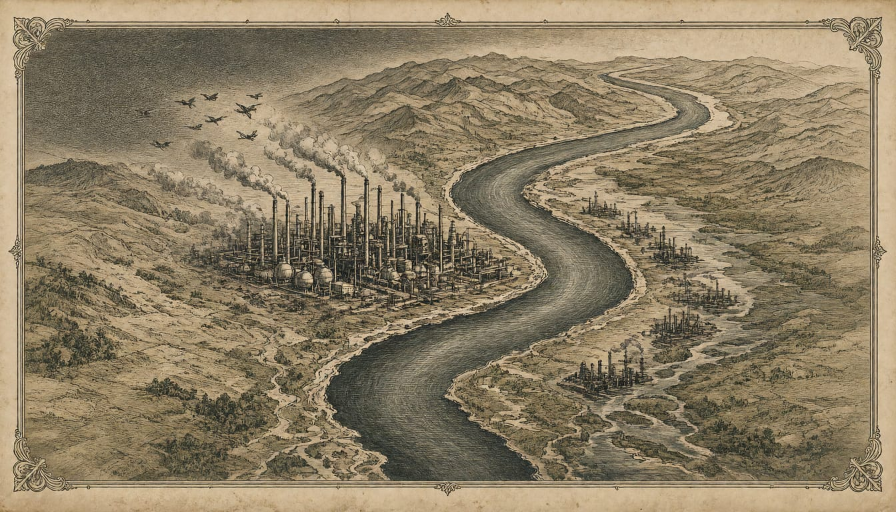

Ukraine strikes Volgograd refinery as analyst says 55% of Russian gasoline output is down
The Lukoil plant, processing about 15 million tonnes of oil a year, burned after an overnight drone attack, and Rosneft has reinstated fuel sale limits nationwide. Strikes since late October have hit refineries with about 30% of Russia's primary refining capacity.

Ukraine's Defence Forces struck the Lukoil refinery at Volgograd on the night of 13 November, a plant that processes about 15 million tonnes of oil a year. According to the Ukrainian military, a fire broke out at the refinery, and the ATs-1, ATs-3, ATs-5 and ATs-6 primary oil refining units, a hydrotreating unit, a loading rack and six 2,000-cubic-metre reservoirs were hit. Oil and gas analyst Vitaly Vakulenko said that taking this attack into account, capacity producing about 55% of Russia's commercial gasoline has been put out of action.
Kyiv's General Staff calls the Volgograd plant one of the key fuel stations of the Russian army in the south, sending fuel to the front and to airfields used for strikes on Ukraine. The campaign is wider than one plant. Strikes since late October have hit refineries with a combined capacity of about 300,000 metric tons a day, roughly 30% of Russia's primary refining capacity.
The refinery has stood on the Volga since 1957, sending its products across southern Russia. Volgograd governor Andrei Bocharov said four workers in the city's southern industrial zone were killed and two more hospitalized. Russia's Ministry of Defense said 1,198 Ukrainian drones were destroyed overnight over Russia and annexed Crimea. TASS called it one of the most massive attacks of the year; the Ukrainian military has not commented.
Falling debris from the same night's attack caused damage in Rostov-on-Don. City head Alexander Skryabin said a state of emergency was introduced in the districts where damage was recorded. Rostov Region Governor Yury Slyusar said falling drone debris caused fires in the city and in the Aksaysky District, including one at a warehouse of 1,500 square metres. One person was injured and hospitalized, Slyusar said. He put the number of drones destroyed by air defence over the city and ten districts at more than 120.
The Main Investigative Directorate of the Investigative Committee opened a criminal case under Article 205 of the Criminal Code, on terrorist acts, after the attack on the Volgograd Region, spokesperson Svetlana Petrenko said. Rosneft, Russia's largest oil producer, has reinstated limits on fuel sales at its filling stations nationwide after the run of attacks on refineries.